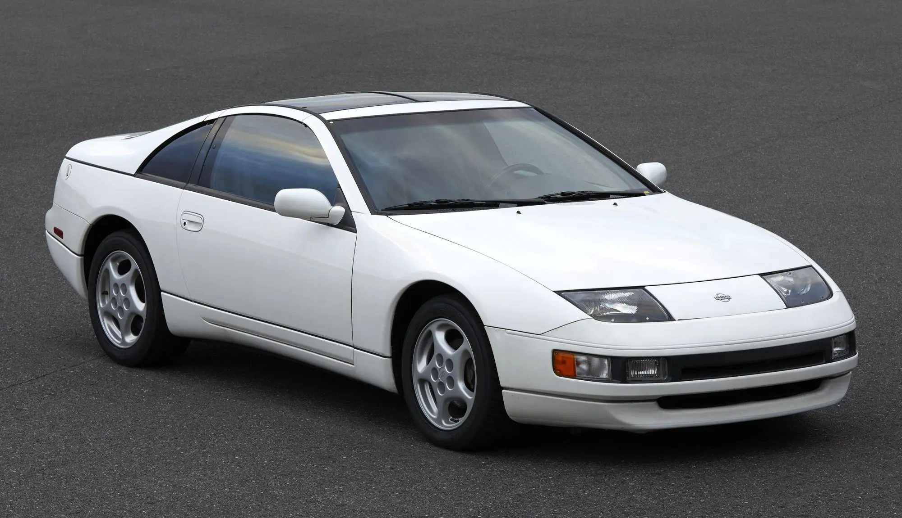
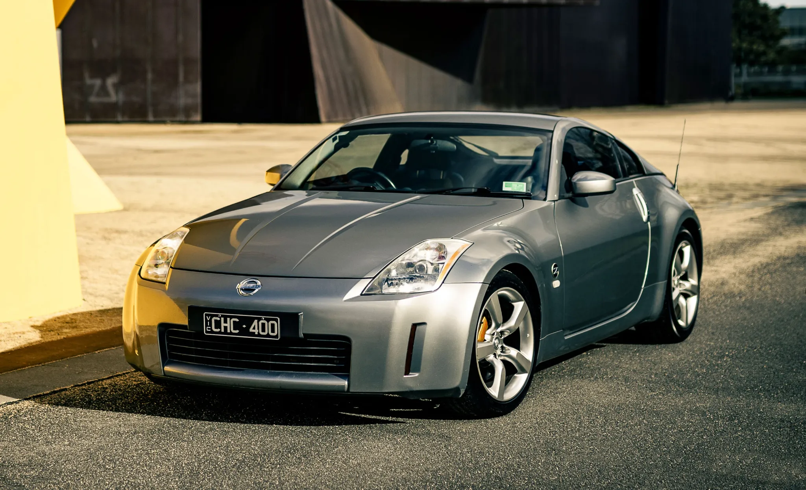

Datsun 240Z / Fairlady Z
The 240Z introduced the Z-car identity with a clean fastback shape, a driver-focused cabin, and an affordable sports-car feel. It became the visual starting point for the entire archive.
Browse the cars shown in the prototype direction. Use the search bar or filter buttons to test the browsing flow. This page is designed to be clear enough for peer feedback on navigation, hierarchy, and scale.
The 240Z introduced the Z-car identity with a clean fastback shape, a driver-focused cabin, and an affordable sports-car feel. It became the visual starting point for the entire archive.

The Z32 pushed the Z into a more advanced 1990s era. Its body became wider and smoother, with a more integrated design language than the earlier cars.

The 350Z reintroduced the Z as a modern performance coupe after a gap in production. It simplified the shape into a short, solid, planted stance that became central to 2000s Nissan performance culture.

The 370Z refined the Z33 formula with tighter proportions and a more aggressive front end. NISMO versions amplified the motorsport feel through aero and chassis-focused styling.

The current Z reinterprets historic Z cues with a modern body and lighting package. Its profile and roofline reference earlier generations while the surfacing is clean and current.